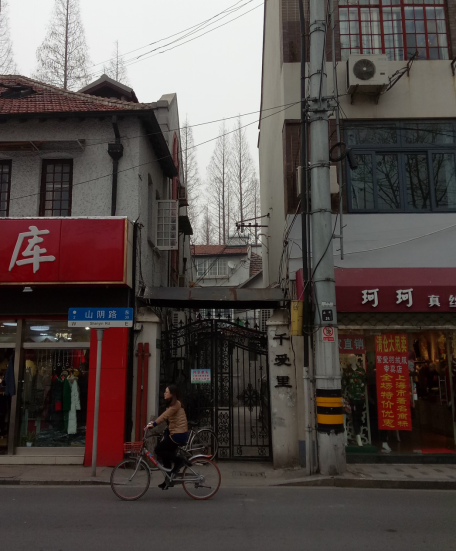
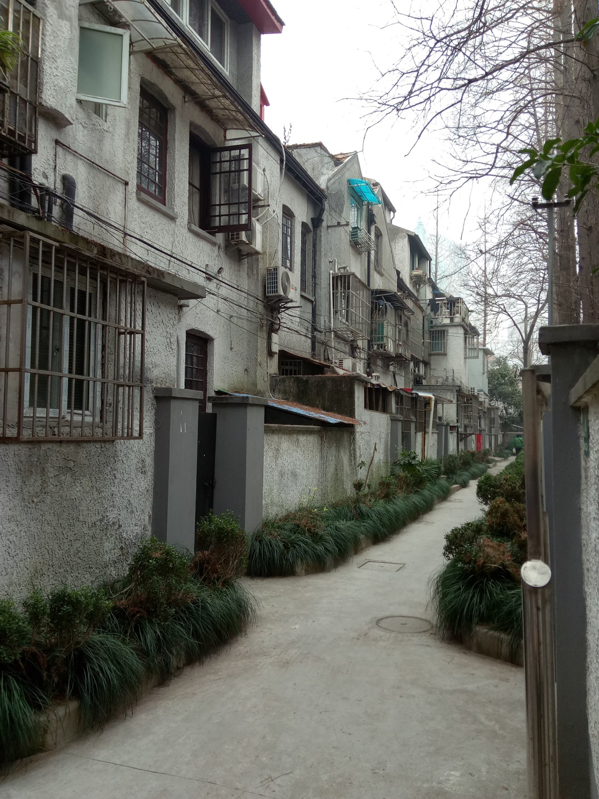

千爱里位于今四川北路2044—2058号街面住宅八幢及山阴路2弄内三层住宅五排四十五幢，是一片日本式花园住宅，占地1.54万平方米。砖木结构，联排式建筑。这里紧邻四川路甜爱路，闹中取静，是山阴路最好的地段。该住宅小区系日商东亚兴业株式会社出资建于1928年左右。居住者以日本侨民为主。

（千爱里入口）
1929年日本友人内山完造先生将原开设在四川北路横浜桥的内山书店总店迁到千爱里（今四川北路2050号）；鲁迅先生也经常在此进出。还曾借千爱里40号（今38号）举办过木刻展览会。抗战胜利后，千爱里住宅由中央信托局地产管理处接管，并作为民房对外租赁。解放后由上海市人民政府接管。

（千爱里小区内部）
如今千爱里内的房屋大多保留了原来的日式结构，如坡形屋顶、三角形的天窗、屋内的玄关、屋外的庭院等，依稀可见当初日式花园住宅的风貌。